Hockey sur glace
Hockey sur glace — Hommes & Femmes
Palazzo del Ghiaccio
🚇 Métro M3 — Porta Romana, puis tram 12. À 15 min du centre.
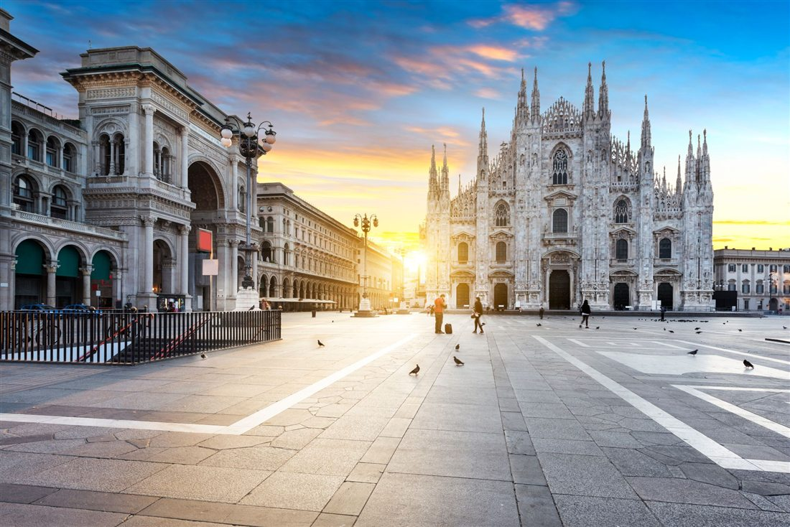
Quatre arènes au cœur de la ville, conçues pour accueillir les meilleures performances mondiales.
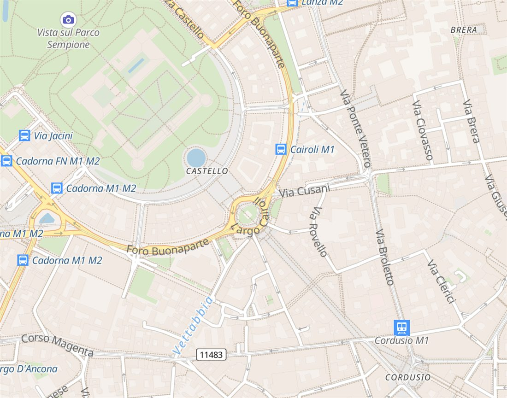
Hockey sur glace — Hommes & Femmes
🚇 Métro M3 — Porta Romana, puis tram 12. À 15 min du centre.
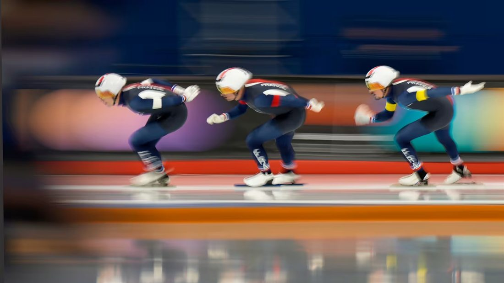
Patinage de vitessePatinage de vitesse courte piste
🚇 Métro M2 — Assago Milanofiori Forum. Navette officielle depuis le Duomo.
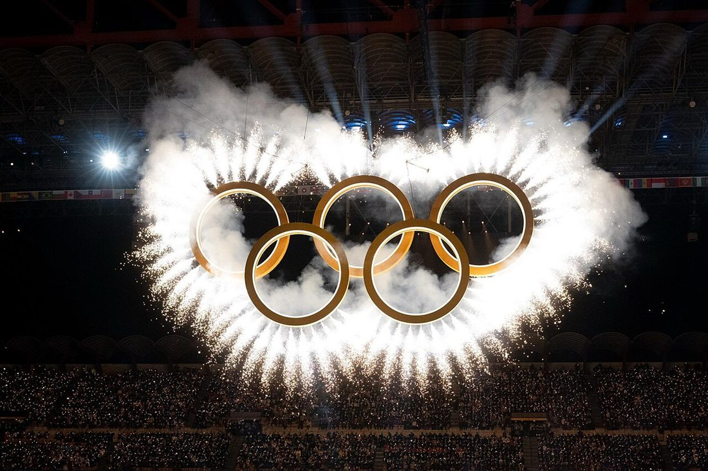
CérémonieCérémonie d'ouverture & de clôture
🚇 Métro M5 — San Siro Stadio. Tram 16 depuis le centre-ville.
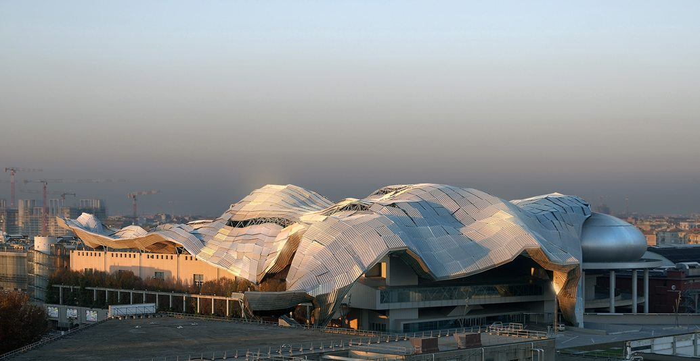
Fan ZoneFan Zone & événements culturels
🚇 Métro M1 — Amendola. Retransmissions en direct, animations, restauration.
2°
Min moy.
9°
Max moy.
7
Jours pluie
4h
Soleil/jour
 Milan
Milan
Épreuve culturelle
La cathédrale gothique au cœur de la ville — concerts et expositions au programme.
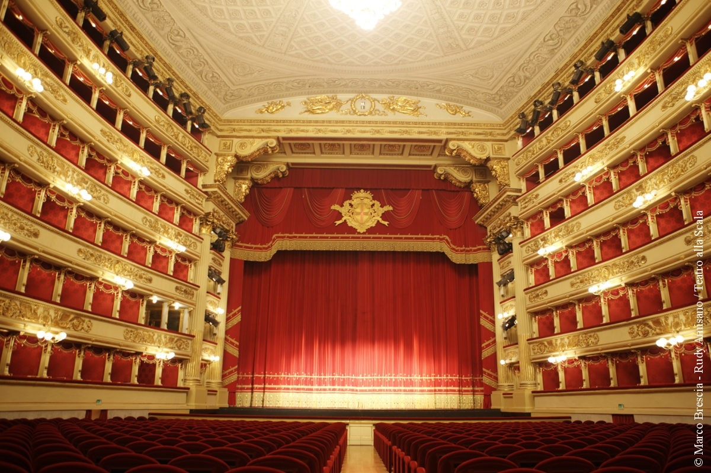
MilanÉpreuve culturelle
Le temple de l'opéra accueille galas et créations pendant les Jeux.
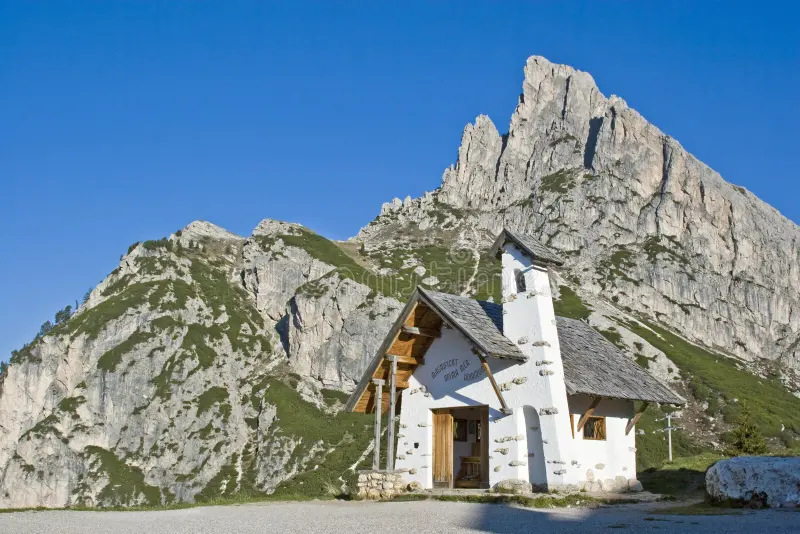
MilanÉpreuve culturelle
Le salon de Milan : mosaïques, boutiques et installations artistiques.
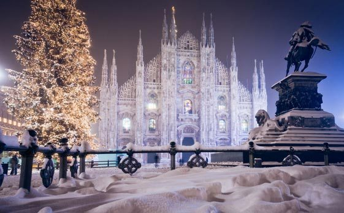
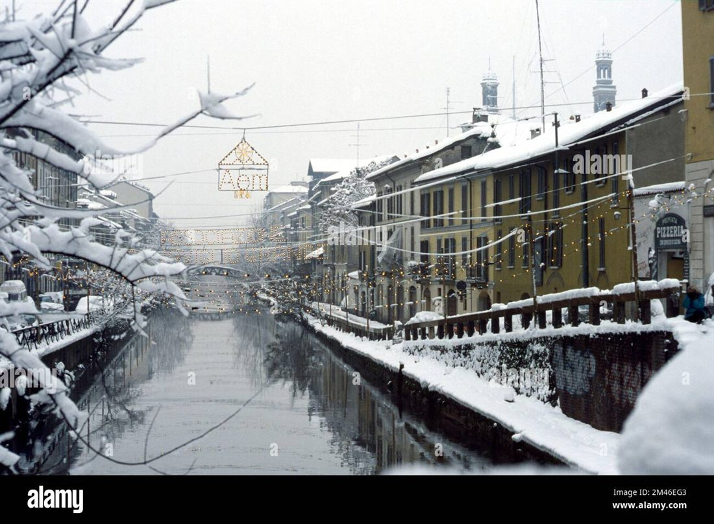
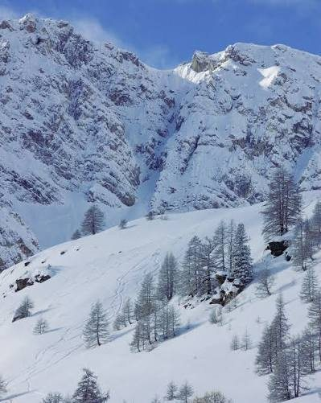
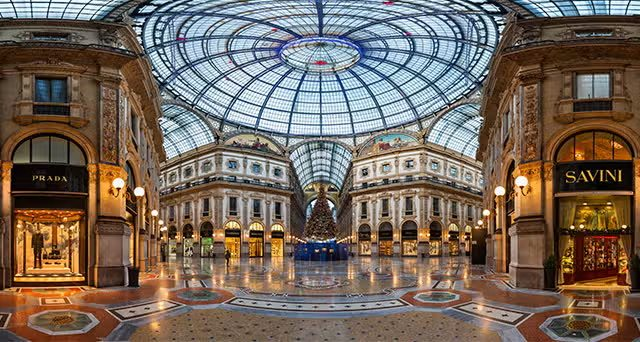
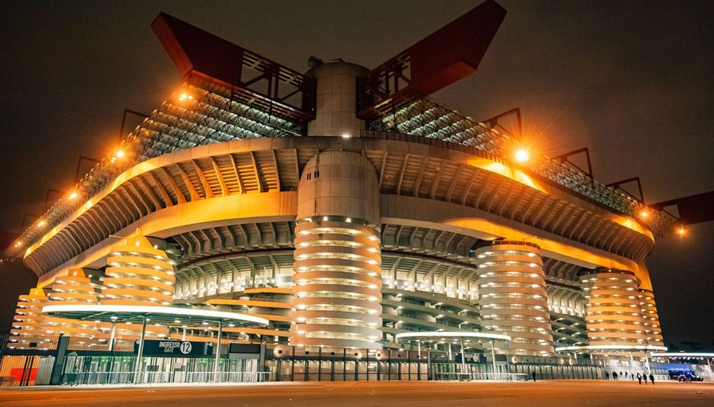